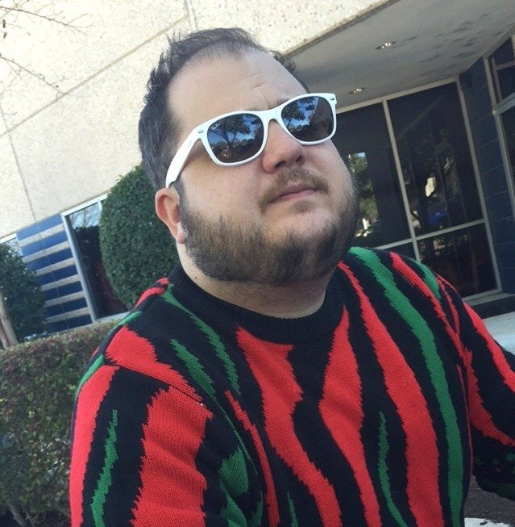

About

Jordan Knight is a Software Engineer Team Lead at a company name Volusion in Austin, Texas. He started as a Teir 1 support representative with this company in 2013. With an excellent work ethic and a desire to self improve, he has held a number of titles with this company. After rising to the highest teir in support, he was offered a position in the product department as a QA Tester. Proving himself a capable QA asset, he was promoted to QA Analyst. After some time in this position, he moved into an Associate Developer role that led him to eventually run his own team of engineers.
Jordan owns a rambunctious pit bull named Merle Waggard. He enjoys cooking and playing the piano. Jordan is also always down to party.
Connect With Me